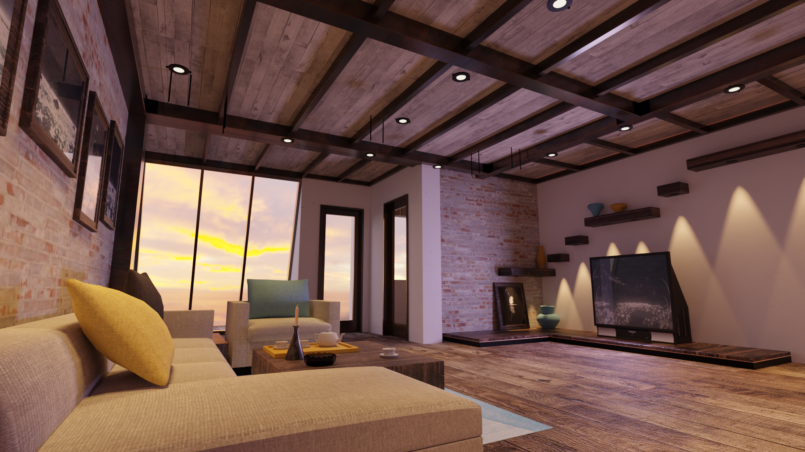

Premier gros projet de 3D qui consistait à mettre en scène divers objets d'heroic fantasy et de donner vie à cette scène. Voici donc une bonne vieille taverne où viennent se reposer les aventuriers accomplits.
Le principe était de créer la nouvelle pochette d'album d'un artiste ou d'un groupe imposé, j'ai donc réalisé la "dernière pochette du groupe de rock britannique Genesis, très inspiré par leurs précédentes covers.
Planches de recherches et de croquis pour la création d'un concept de platformer 2D narratif à visée artistique. On y trouves les modèles de Sol et Sélénité, être du Soleil et de la Lune, protagoniste de Eclipse.